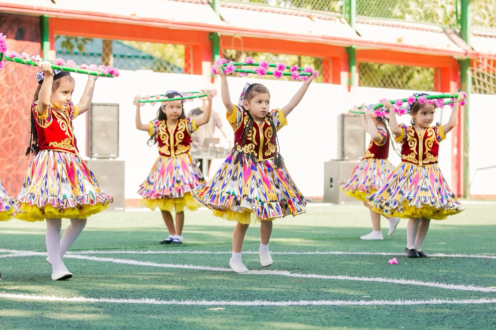
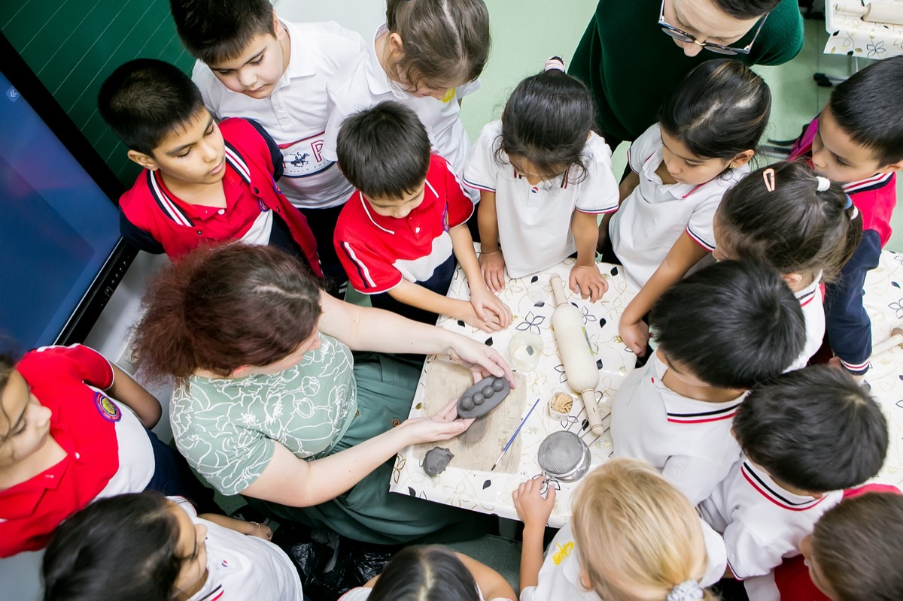

«Мой ребёнок не говорит по-английски»
Эту фразу родители произносят на первой встрече почти виновато — как признание, которое репетировали по дороге. За ней всегда стоят два страха, и оба обычно остаются несказанными. Первый — за ребёнка: он будет сидеть в классе, где всё на английском, и чувствовать себя глупым. Второй — за себя: нас не возьмут, и будет неловко.
Разберём оба. Спокойно, потому что повода для вины здесь нет.

Язык — не предмет, а среда
Взрослые учат язык как предмет: правила, списки слов, домашние задания. Поэтому взрослому кажется, что и ребёнку предстоит этот же путь, только страшнее — без права на ошибку, при всём классе.
Дети входят в язык иначе. В среде, где английский — не цель урока, а способ жить: играть, спорить, договариваться на перемене — ребёнок не изучает язык, а присваивает его. Сначала он понимает больше, чем говорит. Потом наступает период тишины, который родителей пугает, а лингвистов радует: ребёнок накапливает. А потом он начинает говорить — и его уже не остановить.
Это не оптимизм, это механика возраста: чем раньше ребёнок оказывается в среде, тем незаметнее проходит вход. Вопрос не в способностях вашего ребёнка. Вопрос только в том, когда он в эту среду попадёт.
Никто не остаётся с этим один
То, что ребёнок присваивает язык сам, не значит, что его оставляют справляться в одиночку. Вход в язык — управляемый процесс: уровень ребёнка видят, поддержку дают прямо внутри учебного дня — как и всю остальную помощь в школе, где не нужна вторая смета. Поэтому и готовить его год у репетитора, «чтобы не опозориться», не нужно: к среде ребёнок привыкает, живя в ней, а не готовясь к ней заранее.

«Нас не возьмут»
Теперь про второй страх. Встреча при поступлении — это не экзамен и не отбор. Мы знакомимся с ребёнком, чтобы понять его сильные стороны — так это устроено у нас, и это честный ответ на вопрос, который родители боятся задать. У шестилетки не бывает «недостаточного уровня английского», потому что английский в этом возрасте — не входной билет, а результат учёбы. Требовать его на входе — всё равно что требовать результат до начала работы.
Школа, которая отсеивает маленьких детей по языку, экономит на своей главной работе. Это, кстати, ещё один вопрос в список для встречи с любой школой: «что будет, если ребёнок приходит без английского» — и послушайте, отвечают вам про ребёнка или про требования.
Чем это заканчивается
Заканчивается это так: через десять лет тот самый ребёнок, за которого вам сегодня тревожно, пишет на английском мотивационное письмо — в Торонто, Амстердам или Гонконг — и приёмные комиссии читают его без перевода. Язык, который сегодня кажется стеной, становится дверью. Наши выпускники — тому таблица.
Так что приходите знакомиться — именно знакомиться. Приводите ребёнка таким, какой он есть. Всё, что ему нужно уметь к первой встрече, — быть собой.